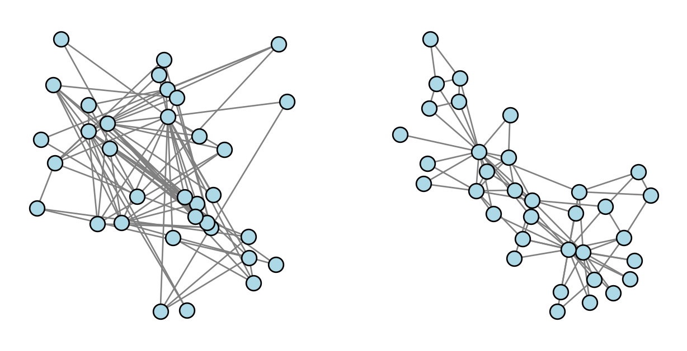
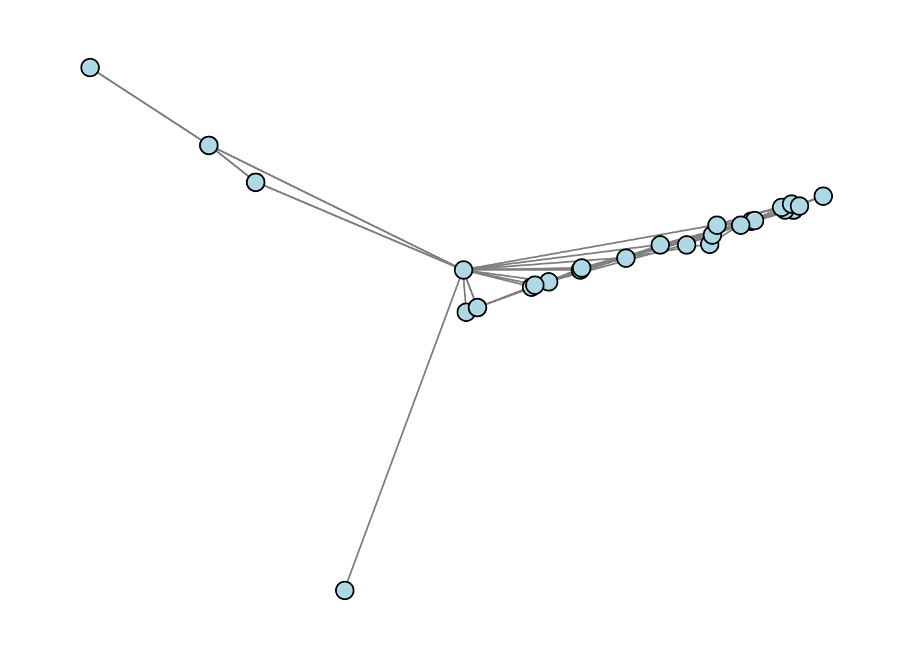
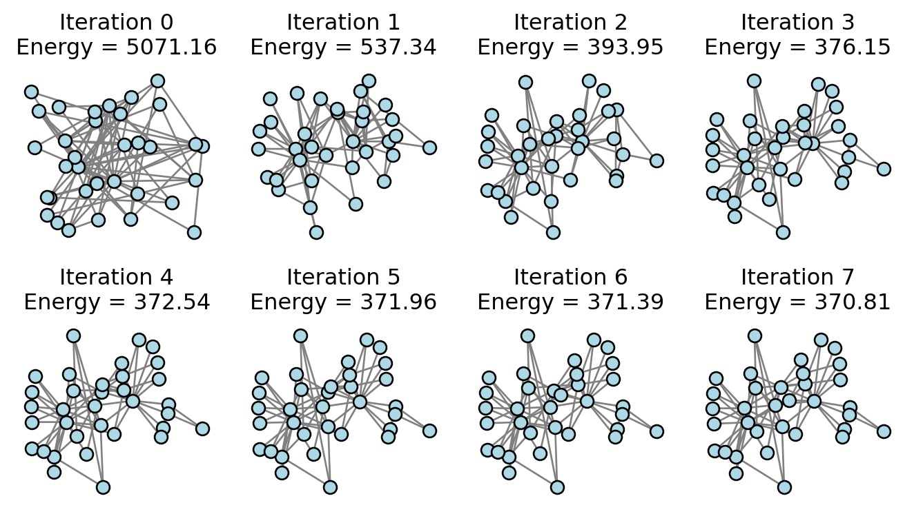
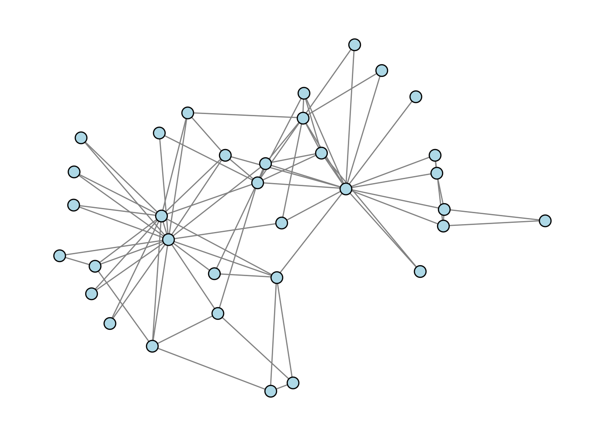
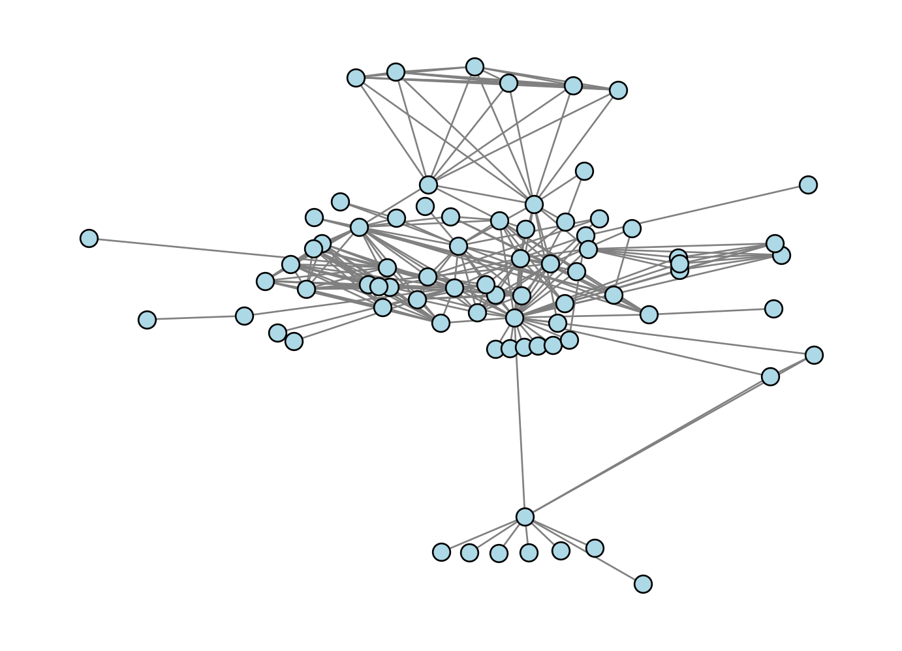
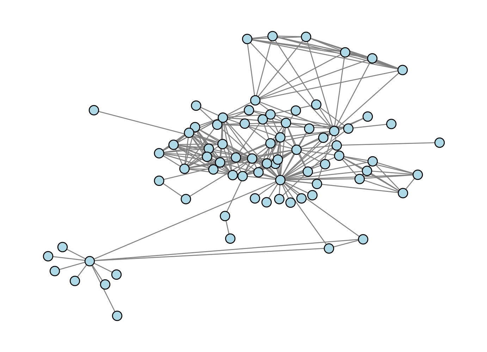

We’ve drawn networks several times in this course so far. Here’s one of our favorite running examples, the Karate Club graph. Here’s two ways to draw it. On the right, we’ve drawn the graph by assigning every node to a location in the unit square \([0,1]^2\) uniformly at random. On the right, we have used the default layout algorithm in NetworkX, which is invoked automatically when we call nx.draw.
import networkx as nximport numpy as np from matplotlib import pyplot as plt from scipy.optimize import minimizefig, ax = plt.subplots(1, 2, figsize = (8, 4))def unweight(G):for source, target in G.edges(): G[source][target]['weight'] =1return GG = unweight(nx.karate_club_graph())draw_kwargs = {"node_color": "lightblue", "node_size": 100, "edge_color": "gray", "edgecolors" : "black"}nx.draw(G, ax = ax[1], **draw_kwargs)def random_layout(G):return np.random.rand(G.number_of_nodes(), 2)random_layout(G)nx.draw(G, pos = random_layout(G), ax = ax[0], **draw_kwargs)

Which of these drawings look better to you? Which do you feel better helps you understand the structure of the graph?
In this set of notes, we’ll develop from scratch an algorithm for producing reasonably attractive visualizations of networks. We’ll then discuss some of the significant limitations associated with drawing networks as points connected by line segments, and consider some alternatives.
In Section 6.14.2, Newman (2018) gives some heuristic reasons to suggest that our friend the Laplacian matrix can give a good guide to the quality of a network drawing. This suggests a natural idea: why not just use the graph Laplacian itself to draw the network? Laplacian spectral embedding gives us a way to do this. To implement Laplacian spectral embedding, we:
Form the Laplacian matrix \(\mathbf{L} = \mathbf{D} - \mathbf{A}\).
Find the second and third smallest eigenvalues of the Laplacian.. Let \(\mathbf{v}_2\) and \(\mathbf{v}_3\) be their corresponding eigenvectors.
Position the nodes in \(\mathbb{R}^2\) according to the values of these eigenvectors: the first coordinate is given by the entries of \(\mathbf{v}_2\), and the second coordinate is given by the entries of \(\mathbf{v}_3\).
Recall that, if \(G\) is connected, then the very smallest eigenvalue of the Laplacian is always equal to 0 and corresponds to an eigenvector with constant entries.
This elegant algorithm is important enough to be implemented in NetworkX: it’s nx.spectral_layout. But we can implement a full version (for connected graphs) of it ourselves.
#---A = nx.to_numpy_array(G)D = np.diag(np.sum(A, axis =1))L = D - AE =tuple(np.linalg.eig(L)) # compatibility with numpy 2.0.0_, i, j = np.argsort(E[0])[:3]v_1 = E[1][:, i]v_2 = E[1][:, j]v = np.column_stack([v_1, v_2])#---
How’d we do?
nx.draw(G, pos = {i: v[i] for i inrange(G.number_of_nodes())}, **draw_kwargs)

Oh dear, that doesn’t look very good at all! This is a good mini-lesson in applied mathematics: sometimes the most elegant solution is outstanding, and sometimes it just doesn’t work very well in computational practice.
Network Drawing as Isometry Approximation
Let’s try a better approach. We’re going to view network drawing primarily as the problem of placing the nodes. This corresponds to the following problem:
For drawing on a computer screen or chalkboard, \(d = 2\). The general task of placing nodes in Euclidean space is often called graph embedding, and has applications in deep learning for much higher values of \(d\).
To each node \(i \in N\), assign a vector \(\mathbf{x}_i \in \mathbb{R}^d\).
If we collect all the nodes together, we aim to find a matrix\(\mathbf{X} \in \mathbb{R}^{n \times d}\), where \(n\) is the number of nodes in the graph, such that the \(i\)th row of \(\mathbf{X}\) is the vector \(\mathbf{x}_i\) assigned to node \(i\).
Of course, we don’t want to just find any old matrix \(\mathbf{X}\); that’s what we did on the random visualization above and the result was not very impressive. Instead, we want to find a matrix \(\mathbf{X}\) that reflects the structure of the graph in some useful way. There are multiple ways to
There are multiple ways to approach this problem, but in these notes, we are going to follow the approach of Kamada and Kawai (1989). Their idea is simple to state:
Choose \(\mathbf{X}\) so that the Euclidean distance \(d^e_{ij} = \lVert \mathbf{x}_i - \mathbf{x}_j \rVert\) is approximately the same as the graph geodesic distance \(d^g_{ij}\) between nodes \(i\) and \(j\), for all pairs of nodes \((i,j)\).
This approach is an expression of the geometric idea of isometry: we are looking to map the nodes from one metric space (the graph) into another metric space (Euclidean space) in a way that approximately preserves distance.
To make this actionable, let’s define an optimization objective that measures how far apart the Euclidean distances are from the graph geodesic distances:
This objective function is also sometimes called an “energy” of the problem. Let’s implement a function that computes the energy, given a matrix of distances \(\mathbf{D}\) and a matrix of node positions \(\mathbf{X}\).
#---def energy(X, D): n = X.shape[0]return np.sum([(np.linalg.norm(X[i] - X[j]) - D[i, j])**2for i inrange(n) for j inrange(n)])def partial_energy(x, D, k):return np.sum([(np.linalg.norm(x - X[j]) - D[k, j])**2for j inrange(G.number_of_nodes())])#---
Now we’ll implement an algorithm that attempts to minimize the energy by moving the position of each node, one at a time. Here’s how a single step works:
We select a node \(k\).
We minimize \(k\)’s contribution to the energy, which is \(\sum_{j \in N\setminus k} \left( \lVert \mathbf{x}_k - \mathbf{x}_j \rVert - d^g_{kj} \right)^2\).
We cycle through all the nodes, updating each of them, and then we repeat the process for some specified number of iterations. First, let’s visualize how this looks. Then, we’ll implement this algorithm ourselves.

Note that the energy very quickly shrinks after the first iteration. The structure of the visualization is resolved fairly clearly after just a small number of iterations.
Ok, time to implement!
#---def optimization_layout(G, n_iter =100): D = nx.floyd_warshall_numpy(G) # matrix of Euclidean distances X = random_layout(G) # initializationfor _ inrange(n_iter): # specified number of iterationsprint(f"Current energy : {energy(X, D)}")for k inrange(G.number_of_nodes()):def partial_energy(x, D, k):return np.sum([(np.linalg.norm(x - X[j]) - D[k, j])**2for j inrange(G.number_of_nodes()) if j != k])# minimize the partial energy with respect to the position of node k res = minimize(partial_energy, X[k], args = (D, k), method ='BFGS')# update the position of node k X[k] = res.xreturn X#---
Let’s try it out:
#---X = optimization_layout(G, n_iter =10)nx.draw(G, pos = {i: X[i] for i inrange(G.number_of_nodes())}, **draw_kwargs)#---
Current energy : 5008.911265163744
Current energy : 479.1119001476208
Current energy : 332.6430015306248
Current energy : 318.6387699044556
Current energy : 307.3010951083751
Current energy : 303.81948048585843
Current energy : 303.6680015521836
Current energy : 303.6589031275522
Current energy : 303.65811737158
Current energy : 303.65800304142624

Our result looks pretty reasonable. Nodes that “should” be close to each other do indeed appear to be drawn close together in the graph.
The results are not always reliable; if we check the Les Miserables graph, we might argue that a lot of the nodes in the dense center of the graph are a little too squished together:
G = nx.convert_node_labels_to_integers(nx.les_miserables_graph())X = optimization_layout(G, n_iter =10)nx.draw(G, pos = {i: X[i] for i inrange(G.number_of_nodes())}, **draw_kwargs)
Current energy : 146994.73201419896
Current energy : 10775.523958369178
Current energy : 6777.5013476300965
Current energy : 6298.197325534889
Current energy : 6214.343262474495
Current energy : 6204.265664623094
Current energy : 6202.948574547777
Current energy : 6202.76369873904
Current energy : 6202.7292869110115
Current energy : 6202.722256101726

An Adjustment
We can compensate for this by weighting pairs of nodes differently. In the final form of the Kamada-Kawai algorithm, we modify the objective function by incorporating an inverse-square distance weighting. The modified objective function is
The implementation here is very similar to our unweighted implementation:
def energy_weighted(X, D): n = X.shape[0]return np.sum([(np.linalg.norm(X[i] - X[j]) - D[i, j])**2/D[i, j]**2for i inrange(n) for j inrange(n) if j != i])def optimization_layout_weighted(G, n_iter =100): D = nx.floyd_warshall_numpy(G) # matrix of Euclidean distances X = random_layout(G) # initializationfor _ inrange(n_iter): # specified number of iterationsprint(f"Current energy : {energy(X, D)}")for k inrange(G.number_of_nodes()):def partial_energy(x, D, k):return np.sum([(np.linalg.norm(x - X[j]) - D[k, j])**2/ D[k,j]**2for j inrange(G.number_of_nodes()) if j != k])# minimize the partial energy with respect to the position of node k res = minimize(partial_energy, X[k], args = (D, k), method ='BFGS')# update the position of node k X[k] = res.xreturn XX = optimization_layout_weighted(G, n_iter =10)nx.draw(G, pos = {i: X[i] for i inrange(G.number_of_nodes())}, **draw_kwargs)
Current energy : 145981.4445187683
Current energy : 20055.04332755151
Current energy : 11679.08054919471
Current energy : 11112.278492742982
Current energy : 10979.893198067035
Current energy : 10861.995804570088
Current energy : 10755.349269139639
Current energy : 10629.245049289957
Current energy : 10508.820963925262
Current energy : 10382.517001175722

This version resolves the nodes in the dense core of the network somewhat more cleanly.
A few caveats related to this algorithm:
The energy function is nonconvex, and so in general it is possible for the optimization routine to get stuck at a suboptimal local minimum.
Any rotation or reflection of the node positions \(\mathbf{X}\) yields a new layout with the same energy.
The computation of the complete matrix of pairwise geodesic distances is in general quite expensive on networks of even moderate size.
There are many other ways to draw networks, several of which are implemented as built-in methods in NetworkX. See the documentation for various other possibilities.
Why You Shouldn’t Draw Networks
Making attractive visualizations of large networks is a very fun and satisfying thing to do, and some software packages like Gephi are specifically designed for this task. We encourage you to put network visualizations on your phone wallpaper, t-shirts, posters, websites, etc.
Indeed, Phil Chodrow, one of the coauthors of these notes, made a graph visualization as the image background of his website.
So, what do we mean when we say that you shouldn’t draw networks? In general, it’s very difficult to extract reliable structural insights about networks by eye. This means that the one place drawings of networks usually don’t belong is in scientific papers. It’s just too easy for the eye to be drawn to structural features that may or may not actually be present in the data. For this reason, node-edge visualizations of large networks have been called names like “ridiculograms” and hairballs by prominent network scientists.
What You Should Do Instead
The right way to visualize the structure of your network is very context-dependent, and there are many, many possibilities. Here we’ll point out just one: the adjacency matrix. This is a common strategy for visualizing networks that separate into one or more distinct clusters, sometimes also called “communities.” For example, simply inspecting the adjacency matrix of the Les Miserables graph can reveal a lot about its structure:
The adjacency matrix allows to easily see the presence of dense clusters (indeed, several cliques) in the graph, as well as a few nodes who seem to interact with almost all of the other ones.
In this case, the adjacency matrix was already sorted by node in a way that made the structure clear. In more complicated cases, we may need to use a community detection algorithm to find a way to sort the nodes that reveals useful structure. This is a complicated (and thorny) topic which we’ll touch on later in this course.
References
Kamada, Tomihisa, and Satoru Kawai. 1989. “An Algorithm for Drawing General Undirected Graphs.”Information Processing Letters 31 (1): 7–15.
Newman, Mark. 2018. Networks. Oxford University Press.
 Image credit:
Image credit: